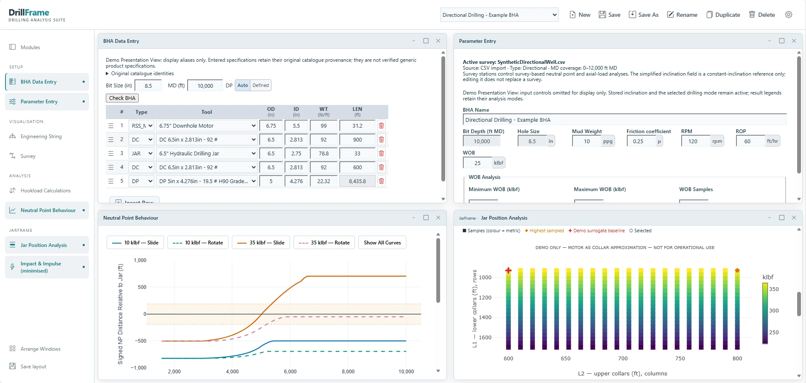

Engineering first
Technical reviews grounded in application requirements, clear assumptions and practical operating decisions.
SPECIALIST TECHNICAL CONSULTING & SOFTWARE
Specialist technical consulting and purpose-built engineering software for drilling, downhole tools, fishing and remedial applications.

Click to enlarge ↗The JarFrame motor-as-collar matrix is an illustrative, preliminary approximation. It does not represent validated motor dynamic performance and must not be used as operational guidance.
ENGINEERED FOR REAL-WORLD OPERATIONS
01 / THE APPROACH
DrillFrame is a specialist technical consultancy combining practical drilling and downhole-tool experience with proprietary engineering software. Support is tailored to each application, technical challenge and commercial objective.
Technical reviews grounded in application requirements, clear assumptions and practical operating decisions.
Specialist calculations and digital workflows developed to support focused engineering tasks.
Independent consulting across applications engineering, technical product introduction and commercial support.
02 / SOFTWARE
Proprietary software supporting specialist engineering decisions. JarFrame is the initial module; StringFrame and MillFrame are future modules, not currently available products.
01 / INITIAL FOCUS
BHA configuration, jar placement assessment and available axial loads, including slide and rotate analysis where supported. Operating constraints and engineering warnings help frame the results within the supported calculation scope.
02 / FUTURE MODULE
Drillstring and BHA engineering workflows, from configuration to mechanical analysis.
03 / FUTURE MODULE
A potential home for milling, intervention and remedial-operation engineering workflows.
Calculation scope: operational use is limited to supported BHA, jar-placement and axial-load calculations, subject to model assumptions, operating constraints and engineering review. Preliminary dynamic-impact research is separate from this scope; dynamic impact predictions are not validated for operational use. The application screenshot above is an illustrative demonstration; its JarFrame motor-as-collar matrix is a preliminary approximation, not validated motor dynamic performance or operational guidance.
03 / ENGINEERING SERVICES
Independent technical expertise for specialist manufacturers, service companies and drilling teams.
Discuss a projectApplication reviews, drill-bit and BHA configuration guidance, and drilling performance assessment to support practical operating decisions.
Application assessment and technical guidance for downhole tools, fishing, milling and remedial operations.
Tool application reviews, troubleshooting, customer trial planning and technical support for field and customer-facing teams.
Technical input to product requirements and introduction, tender responses, application proposals and commercial discussions.
Clear application guides, technical procedures and structured digital workflows to improve consistency and access to engineering knowledge.
Purpose-built calculators and analysis tools that turn defined engineering methods into practical, transparent workflows.
04 / ABOUT DRILLFRAME
Robert Hamilton
Principal Consultant
Robert brings experience in global applications engineering leadership, drill bits, downhole tools and drilling performance, alongside technical product introduction, customer trials and commercial support.
DrillFrame combines this practical industry expertise with specialist software development, helping teams assess applications, address technical challenges and build engineering workflows suited to their operations.
05 / CONTACT
For specialist consulting, applications support or an enquiry about JarFrame, let's start a conversation.